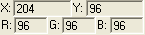

Working with a Picture |
When you use the picture operator to display an image, Mathcad provides a Picture toolbar to alter the image. With this toolbar, you can modify the orientation, brightness and contrast, or magnification of an image. You can also use the toolbar to select all or part of the picture for copying to the clipboard.
To access the toolbar, click on the picture. Mathcad outlines the picture with hash marks, and displays the Picture toolbar.
| Using the Picture toolbar |
The Picture toolbar allows you to manipulate an image in many ways.
Rotate the image counter-clockwise or clockwise. Clicking the button successively undoes the action.

Flip the image about either the horizonal or vertical axis.
Transpose the image. This flips the image about the diagonal that runs from the upper left corner of the image to the bottom right corner.
Return the image to its original orientation.
Change the magnification so you can see either a smaller portion of the image in greater detail, or more of the image in less detail.
Adjust the magnification to display the entire image within the window.
Return the magnification to its original setting.
Increase or decrease the brightness and contrast for the image.
Reset the brightness and contrast to their original levels.
Adjust the grayscale colormap. (Available for pictures read in as grayscale images only.)
Reset the grayscale colormap to its original settings. (Available for pictures read in as grayscale images only.)
Select the entire image, even if it extends beyond the display window.
Create a selection rectangle. Click the mouse to establish one corner and the drag and release the mouse to define the rectangle.
Select an individual pixel within the image.
Select a column of pixels.
Select a row of pixels.
Copies the selected portion of the image to the clipboard as a bitmap.
Move the image within the display window to view a different portion of the image.
Reset all image settings to their original values.
Redisplay the image.

The bottom two rows of the tool bar display the x-y coordinates of the cursor, and the RGB values at those coordinates.
| Using the Properties dialog box |
You can change your color model or output selected portions of the displayed matrix by making appropriate choices from the Picture Properties dialog box.
To open the dialog, right-click on the image and select Properties from the menu. The following options are available:
Input Format:
Grayscale
RGB Color
HSV Color
HLS Color
Output Format:
Grayscale
RGB Color
HSV Color
HLS Color
This option is available only if you check "Output Selected Matrix."
Outputs the coordinates or matrix selected using the toolbar tools. After checking this option, a placeholder appears to the left of the image. Fill in the placeholder with a variable name for the coordinates. For example, you can send the intensities for a selected subset of the picture to a variable in your worksheet, and then use that variable like any other Mathcad matrix.